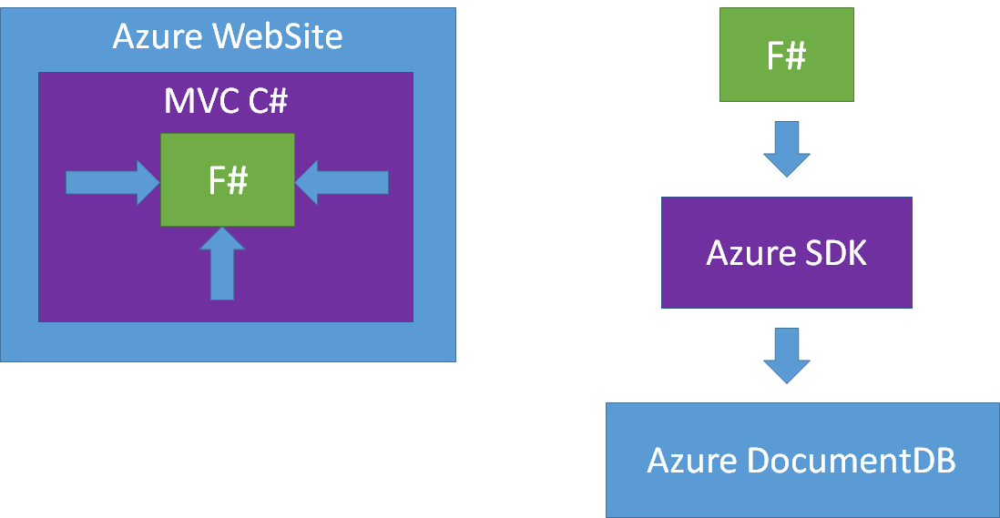
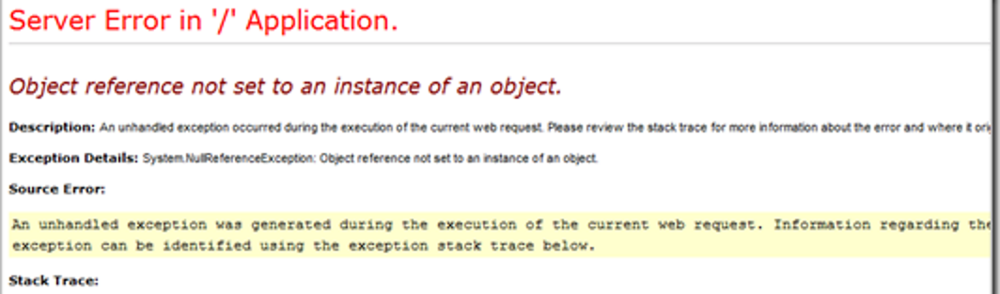
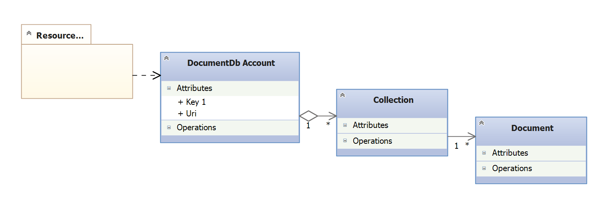
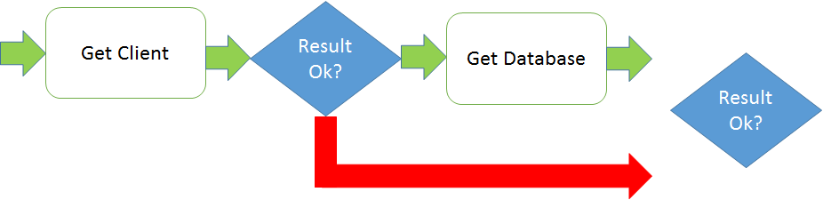
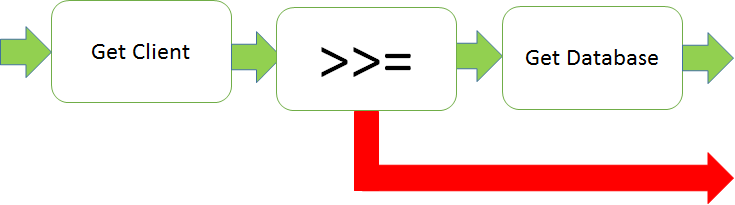

type Person =
{First: string;
Last: string;}
Full name: Document.Person
{First: string;
Last: string;}
Full name: Document.Person
Person.First: string
Multiple items
val string : value:'T -> string
Full name: Microsoft.FSharp.Core.Operators.string
--------------------
type string = System.String
Full name: Microsoft.FSharp.Core.string
val string : value:'T -> string
Full name: Microsoft.FSharp.Core.Operators.string
--------------------
type string = System.String
Full name: Microsoft.FSharp.Core.string
Person.Last: string
type Employee =
| Worker of Person
| Manager of Employee list
Full name: Document.Employee
| Worker of Person
| Manager of Employee list
Full name: Document.Employee
union case Employee.Worker: Person -> Employee
union case Employee.Manager: Employee list -> Employee
type 'T list = List<'T>
Full name: Microsoft.FSharp.Collections.list<_>
Full name: Microsoft.FSharp.Collections.list<_>
val jdoe : Person
Full name: Document.jdoe
Full name: Document.jdoe
val worker : Employee
Full name: Document.worker
Full name: Document.worker
val ignore : value:'T -> unit
Full name: Microsoft.FSharp.Core.Operators.ignore
Full name: Microsoft.FSharp.Core.Operators.ignore
Azure Websites
F#

- Hvorfor F#
- Basic F# Azure Web Site
- Azure DocumentDB
- Railway Oriented Programming
- Azure Web Site med DocumentDB i F# og Chessie
- DocumentDB TypeProvider
Olav Nybø
- Twitter; @onybo
- Mail: olav.nybo@novanet.no
- Dagtid: C# og TypeScript hos If
- Kveldstid: F#
MVC / Web API
[RoutePrefix("persons")]
public class PersonsController : Controller
{
private readonly IPersonRepository _personRepository;
public PersonsController(IPersonRepository personRepository)
{
_personRepository = personRepository;
}
// eg.: /persons
[Route]
public ActionResult Index()
{
var persons = _personsRepository.GetPersons();
return View(persons);
}
// eg.: /persons/5
[Route("{personId}")]
public ActionResult Show(int personId) { ... }
} |
SOLID
Interface Segregation Principle
Single Responsibility
public interface IPersonRepository
{
IEnumerable<Person> GetPersons();
void SaveChanges();
void UpdatePerson(Person person);
void DeletePerson(Person person);
...
} |
public PersonsWithQuery
{
public PersonsQuery(DbContext context)
{
...
}
public IEnumerable<Person> GetPersons()
{
from dbContext where bla bla bla....
}
} |
Hvorfor F#?
1: 2: 3: 4: 5: 6: 7: 8: 9: 10: 11: |
// simple types in one line type Person = {First:string; Last:string} // complex types in a few lines type Employee = | Worker of Person | Manager of Employee list // type inference let jdoe = {First="John";Last="Doe"} let worker = Worker jdoe |


DEMO
- C# web project med F# controllers
- F# MVC 5 / F# Web Item Templates
- ASP.NET 5 project
Azure DocumentDb
- NoSql Database
- SQL
- JSON dokumenter
Azure DocumentDb struktur

DEMO
Azure portal
- Create database
- URI and Keys
- Document Explorer
- Query Explorer
Azure SDKs


1: 2: 3: 4: 5: 6: 7: 8: 9: 10: 11: 12: 13: 14: 15: 16: 17: 18: 19: 20: 21: 22: 23: 24: 25: 26: 27: 28: 29: 30: |
public class DocumentsFetcher { private static string EndpointUrl = "<your endpoint URI>"; private static string AuthorizationKey = "<your key>"; public IEnumerable<Document> GetDocuments() { var client = new DocumentClient(new Uri(EndpointUrl), AuthorizationKey); var database = client.CreateDatabaseQuery() .Where(db => db.Id == "OlavsDemoDB") .AsEnumerable() .FirstOrDefault(); if (database == null) { return Enumerable.Empty<Document>(); } var collection = client .CreateDocumentCollectionQuery(database.SelfLink) .Where(c => c.Id == "Persons") .ToArray() .FirstOrDefault(); return client .CreateDocumentQuery<Document> (documentCollection.DocumentsLink) .ToList(); } } |
F# Pipelines
1: 2: 3: 4: |
getDocumentClient uri password |> getDatabase "OlavsDemoDb" |> getCollection "Persons" |> getDocuments |
Railway oriented programming
Chessie
1: 2: 3: |
type Result<'TSuccess, 'TMessage> = | Ok of 'TSuccess * 'TMessage list | Fail of 'TMessage list |


Railways
1: 2: 3: 4: 5: 6: 7: |
use client = new DocumentClient(uri, password) client |> getDatabase "OlavsDemoDb" >>= getOrCreateCollectionSync client >>= getDocuments client |> either showDocuments showErrorMessages |> ignore |
DEMO
?
- Azure portal: https://portal.azure.com
- Azure DocumentDb: http://azure.microsoft.com/en-us/documentation/services/documentdb/
- Info om Railway Oriented Programming: http://fsharpforfunandprofit.com/posts/recipe-part2/ og video her
- Chessie - ett F# bibliotek for ROP: http://fsprojects.github.io/Chessie/reference/chessie-rop.html
- Gratis online kurs i F#: http://www.tryfsharp.org/Learn